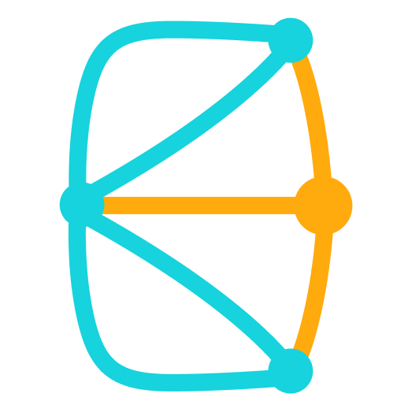

About Me
Hello! I am a tech entrepreneur.
Contacts
Feel free to connect with me:
Projects
-

Knei · Founder, CEO
Aug 2023 – Present
Current status: Active
Knei is a relationships interface. It helps to maintain thoughtful relations with people in your life.
-

Mate · Co-founder, CEO
Jul 2021 – Oct 2022
Current status: Terminated
Mate – matchmaking reel builder for groups and communities https://t.me/WaveMateBot
-

Red Hood · Founder
Dec 2020 – Feb 2022
Current status: Terminated
Red Hood is an audio navigation app for citizens (red-hood.webflow.io)
Follow your route with audio commands and leave custom geomessages for others.
-

Bazar · Co-founder, CEO
Apr 2020 – Jun 2021
Current status: Terminated
Mobile AR menu for bars and restaurants (Instagram)
-

Shum · Co-founder
Mar 2020 – Jun 2020
Current status: Terminated
Application to record and post 1-minute audio stories.
Sometimes it is necessary to record valuable information quickly.
Education
- MSc Photonics – Skoltech '20
- BSc Physics (Quantum Optics) – Novosibirsk State University '18